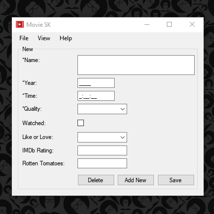
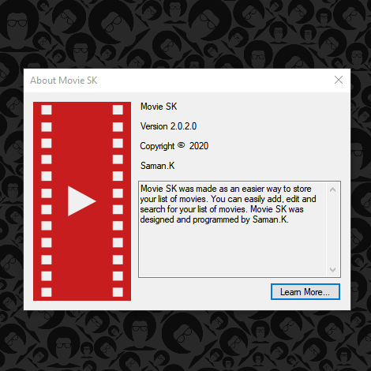
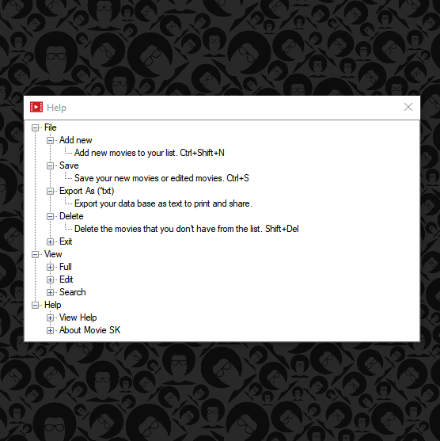
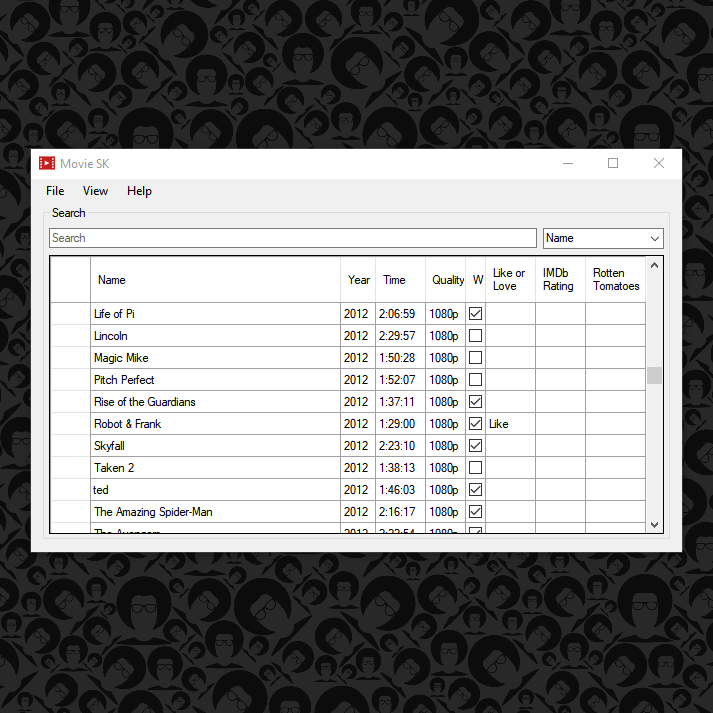
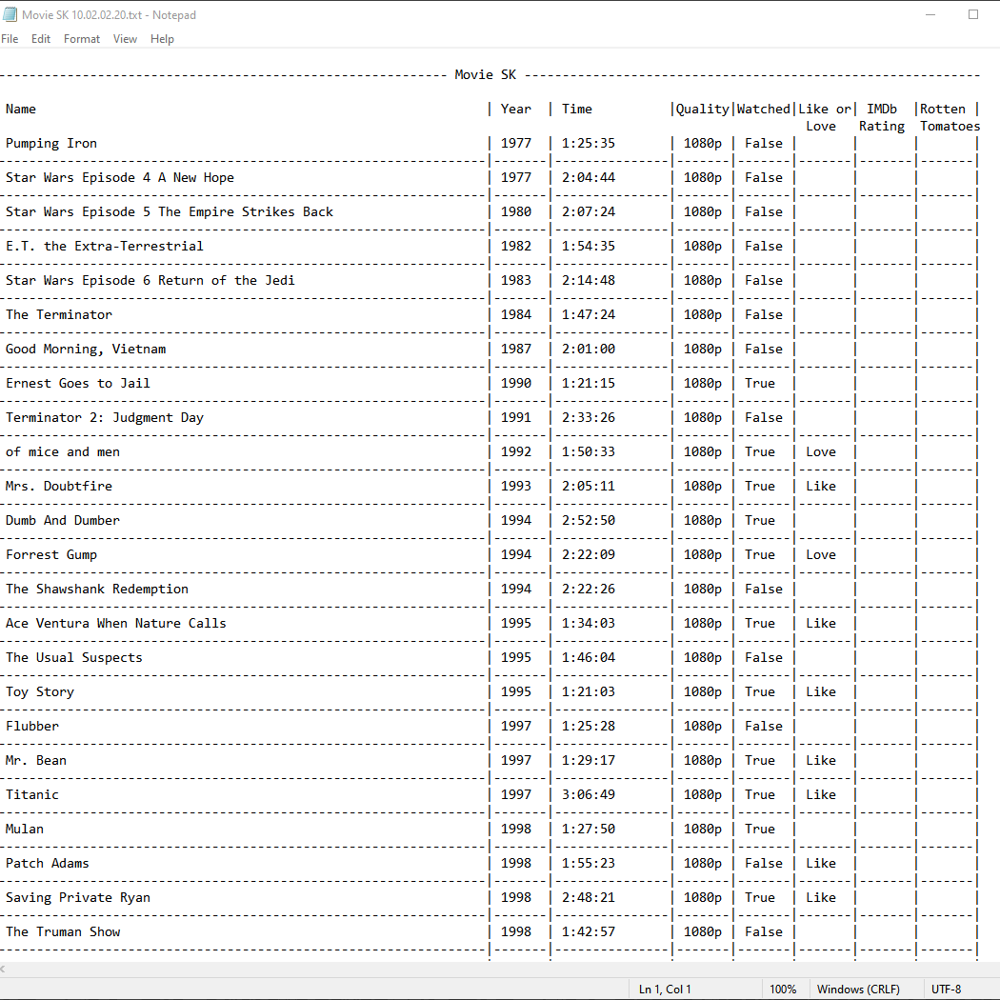
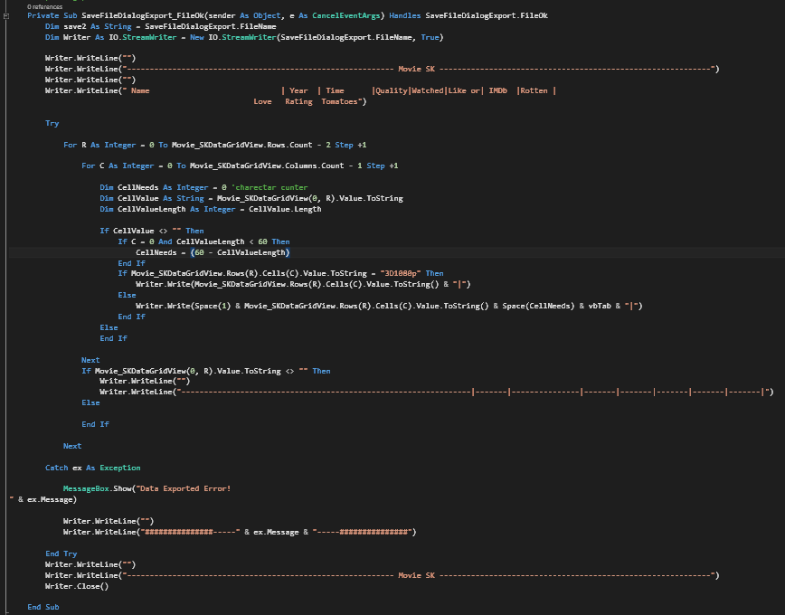

Movie SK


About
Movie SK is a database program. it has been designed to help with organizing a list of movies. Within the app, you can add a new listing, edit, delete and search among the existing listing. Movie SK has an export function which alas you to shear your list with your friends easily.Under the View dropdown, there are four options. Edit, Search and Full mode will resizer and add or remove features for easier uses. And the last option under the view dropdown will tell you the number of movies in your database.

Development
I developed this app for personal use. I replaced my old method of storing my list which was on a .accdb(MS Access database) file. Movie SK is storing the list on .accdb file. for easier backup and use without the application. After I build Movie SK I stoped collecting movies. But the final version is stable and ready to be used.This code will be executed, when Export As (TXT) under the file dropdown pressed.
Private Sub ExTxt_Click(sender As Object, e As EventArgs) Handles ExTxt.Click
Dim Datename As String
Datename = Date.Now.ToString("HH.dd.MM.yy")
SaveFileDialogExport.FileName = ("Movie SK " & Datename)
SaveFileDialogExport.Filter = "txt files (*.txt)|*.txt"
SaveFileDialogExport.FilterIndex = 2
SaveFileDialogExport.RestoreDirectory = True
SaveFileDialogExport.ShowDialog()
End Sub
Photos

Help Window

Search view

Export format

Code (formating of export file)